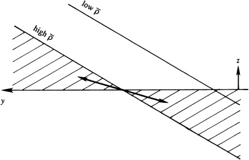

In a stably stratified system with horizontal density surfaces,
such exchanges raise potential energy, so instability cannot occur.
With sloping density surfaces, purely vertical displacements cannot produce $\overline{w'\rho'} < 0$.
However, if displacements include meridional excursions (north-south), particles can move within the wedge between density lines and the horizontal
This process exchanges light particles upward/northward and dense particles downward/southward, making the density surfaces more horizontal.
Potential energy is released from the mean density field, causing growth of perturbation energy.
This process is called sloping convection and the exchange of fluid particles within this wedge of instability results in a net poleward transport of heat from the tropics, which serves to redistribute the larger solar heat received by the tropics.